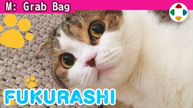
速览
杂谈虽说是杂谈，到目前为止多少都和游戏有关，但这次是和游戏完全无关的话题。樱井在推特上发「今日一张」（每天一张《大乱斗》截图）时，有一样东西被要求「比游戏图更想多看」——那就是爱猫「膨拉西」。顺便一提是母猫，正式名字叫福良（Fukura），因为顺口就叫成了「膨拉西」，相处已经很久。家里有猫，他在家最常脱口而出的话就是：「好可爱」。本集作为与游戏无关的内容，播放了一些膨拉西的截图与影片，包括幼猫时代。照片传达不了的是：她叫声很高，会蹭来蹭去，真的很可爱；当然也像猫一样任性——她是女王嘛，没办法。洗完澡给她喂肉泥条（Ciao Churu）是每日功课。完。
1. 和游戏完全无关 0:04
杂谈虽说是杂谈，之前多少都和游戏扯上关系，但这次是和游戏完全无关的话题。
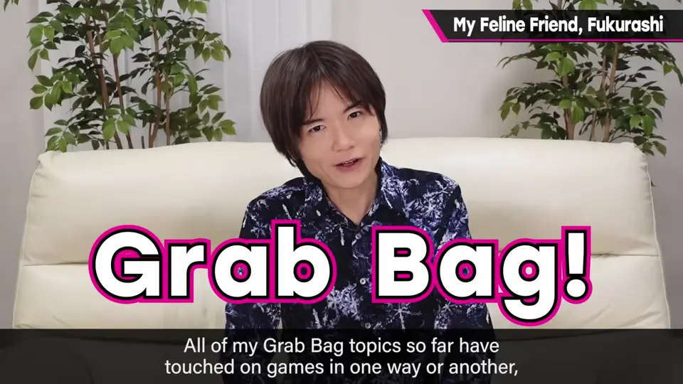
在推特上发「今日一张」时，有个东西比游戏图片更被要求多发。
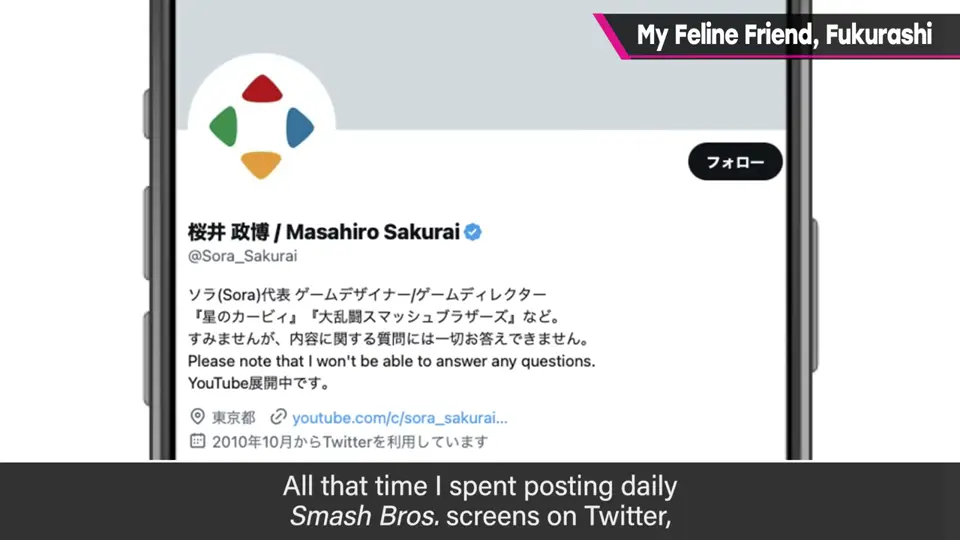
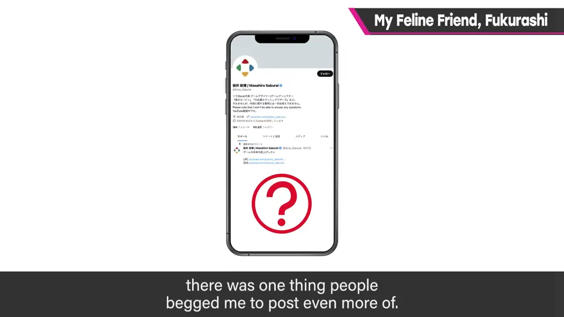
2. 爱猫膨拉西 0:23
那就是爱猫——母猫，正式名叫「福良」，因为顺口就叫成「膨拉西」。相处已经很久了。
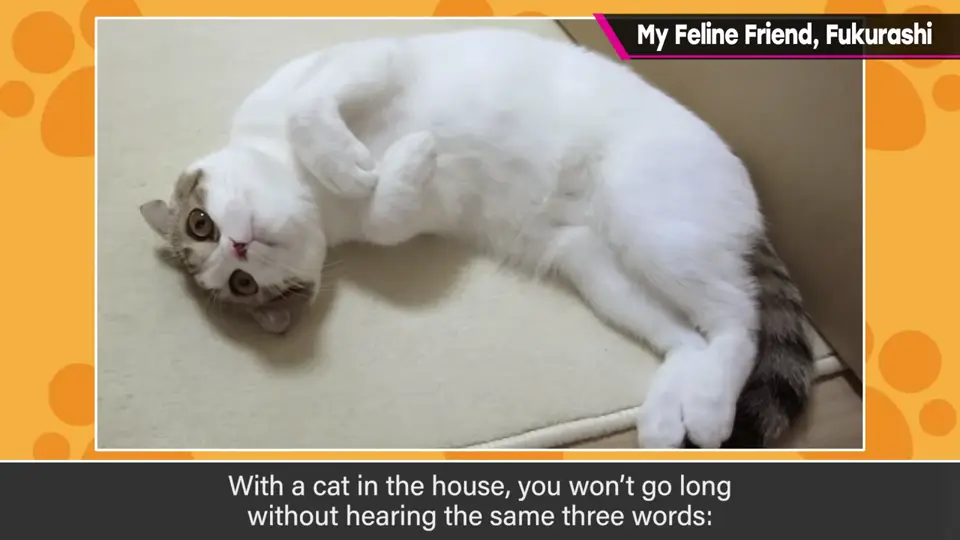
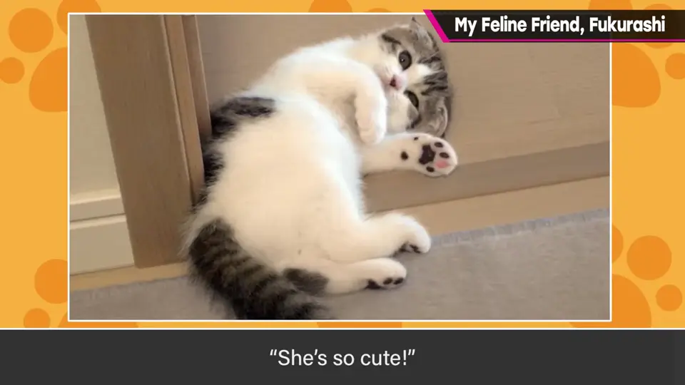
家里有猫，所以他在家最常说的话就是：「好可爱」。
3. 照片与影片 0:44
播放一些膨拉西的截图与影片，包括幼猫时期。
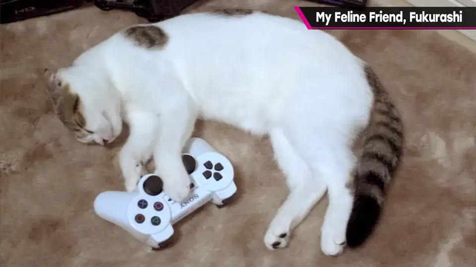
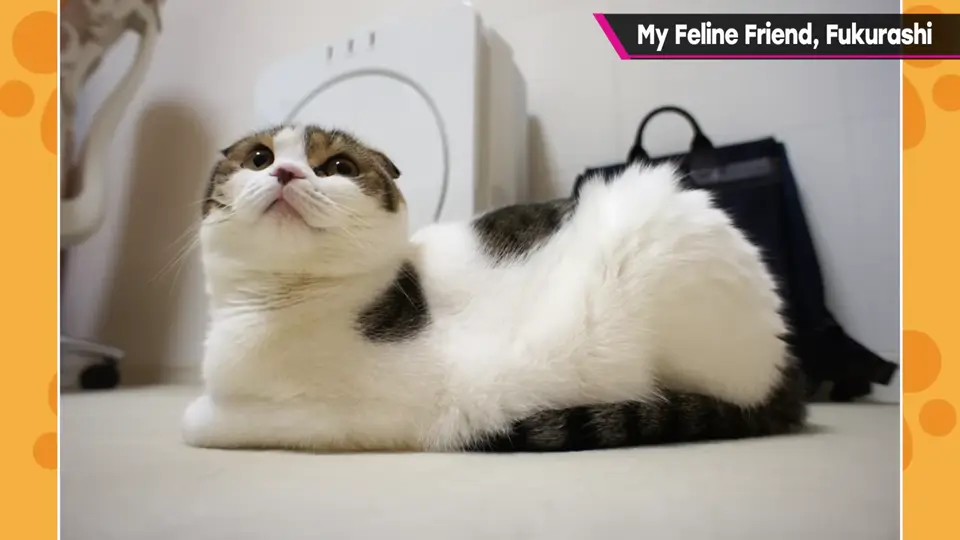
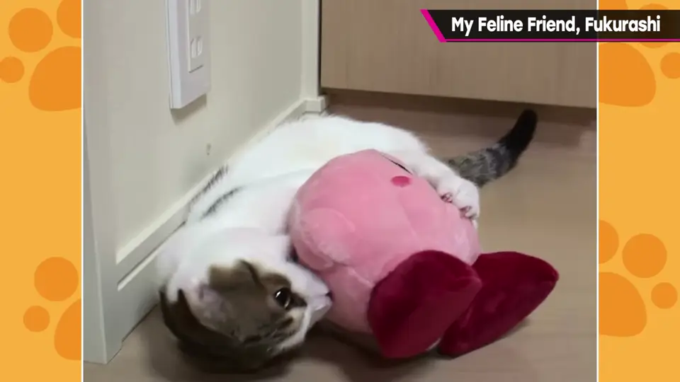
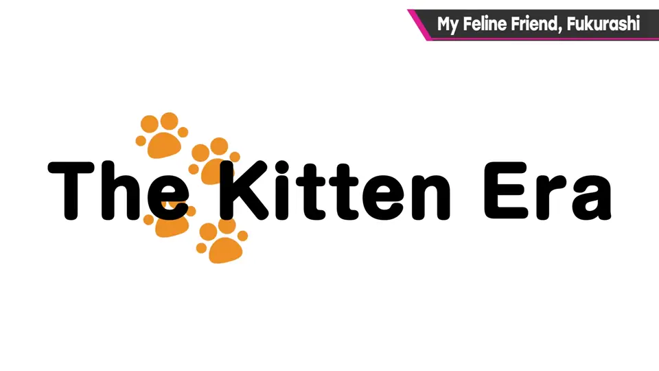
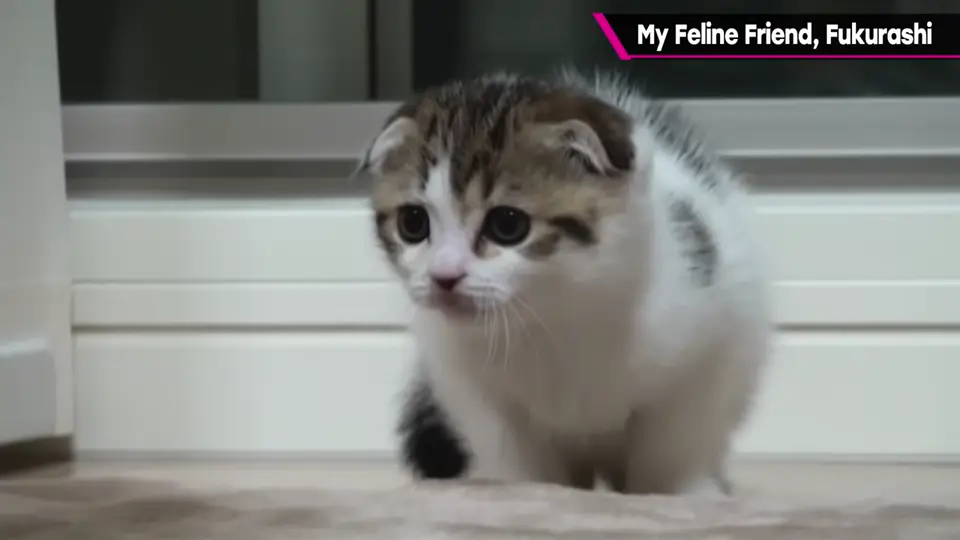
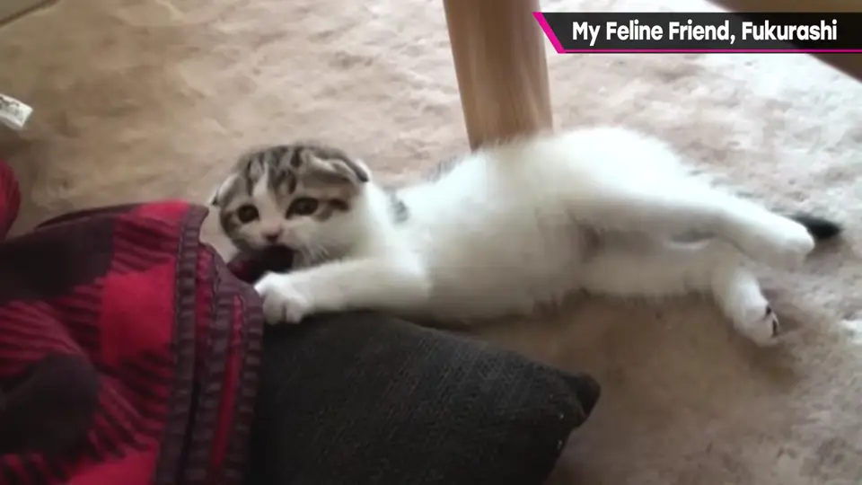
4. 女王陛下 1:56
照片传达不了的是：她叫声很高，还会蹭来蹭去，真的很可爱。当然也像猫一样任性——她是女王，没办法。
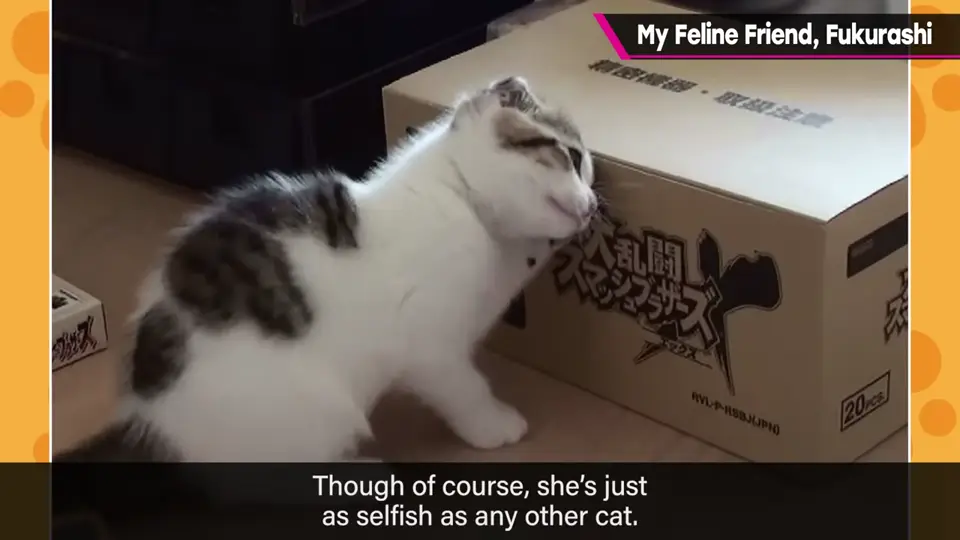
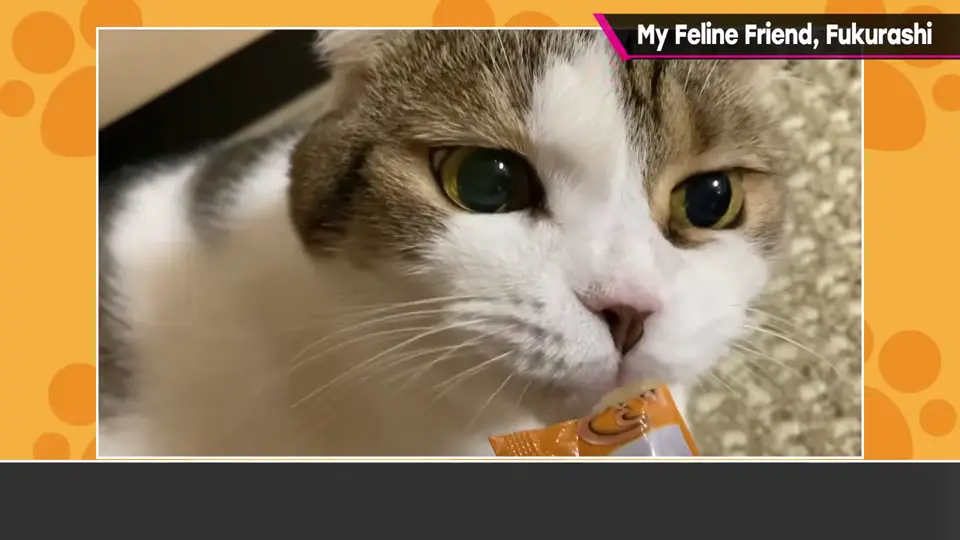
洗完澡给她喂肉泥条是每天的功课。完。
自测题
1. 膨拉西的正式名字是什么？
福良（Fukura），顺口叫成了「膨拉西」。 0:30
2. 樱井说家里有猫后他最常说的话是什么？
「好可爱」。 0:40
3. 樱井每天给膨拉西的「功课」是什么？
洗澡后给她喂肉泥条（Churu）。 2:10